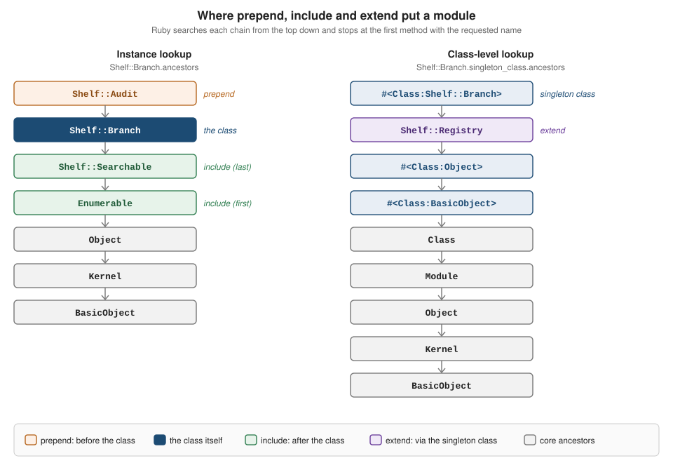

Modules and Mixins
|
This content was generated with the assistance of AI and should be verified against the official documentation before being relied on in production. |
This page is written against Ruby 4.0 (4.0.7, checked on 2026-10-18); features newer than Ruby 3.0 name the version that
introduced them. A module is a container of methods and constants that is not a class: it cannot be instantiated and it
cannot be subclassed, but it can be inserted into the ancestor chain of a class (a mixin) or used as a plain
namespace. Ruby has single inheritance for classes, and mixins are how code is shared sideways: Comparable gives a
class the ordering operators, Enumerable gives it about sixty collection methods, Kernel gives every object puts
and format. This page covers modules from both sides, as namespaces and as mixins, then the two protocol modules of
the core library, the delegation helpers Forwardable and SimpleDelegator, a taxonomy of what modules are used for,
and the caveats (collisions, implicit coupling, testing) that decide when a module is the wrong tool.
It builds on Classes and Objects (a class is a module that can
also create instances) and on Methods and Parameters. The
lookup rules that decide which of several same-named methods runs are in
Method Lookup and super; this page shows the chains and
leaves the full algorithm there. Related pages are
Singleton Classes and Class-Level Behavior
(what extend really changes),
Visibility and Encapsulation,
Refinements and Monkey Patching (the scoped
alternative to reopening a class),
Equality, Hashing and Comparison (the full story
behind Comparable),
Enumerable and
Enumerators and Lazy Evaluation (the methods the
Enumerable mixin supplies),
Hooks, eval and DSLs and
Dynamic Dispatch and Method Definition
(generating methods and modules at run time),
SOLID and Design Patterns (Decorator and Adapter with
delegation) and
Application Architecture in Plain Ruby.
Code loading of the files that define modules is in
Code Loading: require and autoload. For how
other languages share behaviour, see Rust traits,
Swift protocols and
Scala traits. Ruby has no interfaces; the closest relatives of
a mixin are traits and default methods.
Every example on this page was syntax-checked with ruby -wc, run with ruby -w on Ruby 4.0.7 and linted with
RuboCop 1.92 using the configuration of the running shelf gem (target Ruby 4.0, double-quoted strings,
NewCops: enable, Style/Documentation off, and Style/OneClassPerFile off because several examples define a few small
modules and classes in one file). The output shown is the real output. Where an example breaks a cop on purpose, an inline
rubocop:disable comment says so. Most examples are run with ruby -Ilib from the shelf directory, so
require "shelf" finds the gem, as described in the shelf gem source.
The model in one page
Module is a class, and Class is a subclass of Module. So a class is a module with extra abilities (new,
allocate, superclass), and everything in this page about constants, instance methods and the hooks applies to
classes too. A module has two jobs, and most modules do only one of them:
-
Namespace. A module groups constants (classes, other modules, values) under a name so that
Shelf::Store::Memorycannot clash with anotherMemory. It is never included anywhere. -
Mixin. A module holds instance methods that are inserted into the ancestor chain of a class (
include,prepend) or of a single object (extend). The class then responds to those methods as if it had defined them.
The vocabulary used in the rest of the page:
| Construct | Meaning |
|---|---|
|
Creates the module, or reopens it when the constant already holds a module. Reopening a constant that holds a class is a |
|
An anonymous module; assigned to a constant it gets that constant’s name. Used by builder modules. |
|
Inserts |
|
Inserts |
|
Inserts |
|
Makes the following methods module-level functions: a public singleton copy and a private instance method. |
|
A module extends itself so that its own instance methods can be called on the module. |
|
Hooks called after the module has been mixed in. Private, empty by default. |
|
The methods that perform the mixing. |
|
True when |
|
Reflection on the chain, covered in Inspecting modules. |
|
Constant visibility and lookup, covered in Constants and modules. |
The relationships in the running example, drawn as a class diagram. Branch is a library branch; it prepends
Audit, includes Searchable and Enumerable, extends Registry and is created through the usual constructor. The
full chain is shown a few sections below.
Modules as namespaces
A module definition creates a constant. Constants nest: Shelf::Store::Memory is the constant Memory found inside the
module Shelf::Store, which is found inside Shelf. Namespaces are how a gem keeps its names out of the way of every
other gem (the convention is one top-level module per gem, named after it) and how a program groups related classes.
A module used only as a namespace has no instance methods and is never included.
The next file reopens Shelf::Store with the compact module Shelf::Store form and shows what that costs. The nesting
of the body, Module.nesting, contains only Shelf::Store, not Shelf, so a constant that lives in Shelf (such as
Config) is not found by the lexical lookup; the nested form module Shelf followed by module Store has both
modules in the nesting and finds it. The file also confirms that a module is an instance of Module, a class is an
instance of Class, and that Class inherits from Module.
# frozen_string_literal: true
require "shelf"
module Shelf::Store # rubocop:disable Style/ClassAndModuleChildren
def self.where = Module.nesting
def self.memory = Memory
def self.config = Config
end
p Shelf::Store.where
p Shelf::Store.memory
p Shelf::Store.constants
p Shelf::Store.instance_of?(Module)
p Shelf::Store::Memory.instance_of?(Class)
p Class.superclass
begin
Shelf::Store.config
rescue NameError => e
puts e.message
end
begin
Shelf::Store.new
rescue NoMethodError => e
puts e.message
endOutput:
[Shelf::Store]
Shelf::Store::Memory
[:Memory]
true
true
Module
uninitialized constant Shelf::Store::Config
undefined method 'new' for module Shelf::StoreThe rules that matter for namespaces:
-
module Shelf::Storerequires thatShelfalready exists. It does not createShelffor you, and it does not makeShelf's constants visible inside (see above). RuboCop’sStyle/ClassAndModuleChildrenprefers the nested form for exactly that reason. -
The
::operator reaches into a module (Shelf::Store::Memory); a leading::(::String) starts the lookup atObject, which is how code inside a module reaches a top-level constant that the module shadows. -
The lookup of a bare constant checks the lexical nesting from the innermost module outward, then the ancestors of the innermost one, then
Object. The full rules, includingautoloadandconst_missing, are in Variables, Constants and Scope. -
A module name is a constant, so it is
CamelCase. Acronyms stay capitalised (HTTPClient) by convention, and the file name is thesnake_caseform (lib/shelf/store/memory.rb). -
Calling
newon a module is aNoMethodError(undefined method 'new' for module Shelf::Store), as the output shows.
Modules as mixins
A mixin module is written once and inserted into any number of classes. The example below defines three modules and one
class, the shelf library branch. Searchable is included, Audit is prepended and Registry is extended; the file
prints the two ancestor chains and the owner of one method from each.
# frozen_string_literal: true
require "shelf"
module Shelf
# Prepended: runs before the class's own methods.
module Audit
def add(book)
puts "audit: #{book.title}"
super
end
end
# Extended: becomes a class-level capability.
module Registry
def branches = (@branches ||= [])
def open_branch(name) = new(name).tap { |branch| branches << branch }
end
# Included: the instance-level capability.
module Searchable
def search(text) = select { |book| book.title.downcase.include?(text.downcase) }
end
class Branch
prepend Audit
include Enumerable
include Searchable
extend Registry
attr_reader :name
def initialize(name)
@name = name
@books = []
end
def add(book)
@books << book
self
end
def each(&) = @books.each(&)
end
end
p Shelf::Branch.ancestors
p Shelf::Branch.singleton_class.ancestors.first(4)
branch = Shelf::Branch.open_branch("Central")
author = Shelf::Author.new(name: "Ursula K. Le Guin")
isbn = Shelf::Isbn.new(digits: "978-0-441-47812-5")
branch.add(Shelf::Book.new(isbn:, title: "The Dispossessed", author:))
puts branch.search("dispo").map(&:to_s)
p branch.method(:add).owner
p branch.method(:search).owner
p Shelf::Branch.method(:open_branch).ownerOutput:
[Shelf::Audit, Shelf::Branch, Shelf::Searchable, Enumerable, Object, Kernel, BasicObject]
[#<Class:Shelf::Branch>, Shelf::Registry, #<Class:Object>, #<Class:BasicObject>]
audit: The Dispossessed
The Dispossessed by Ursula K. Le Guin
Shelf::Audit
Shelf::Searchable
Shelf::RegistrySource: Module#include, Module#prepend, Object#extend and Module#ancestors
The figure draws those two chains. Ruby searches a chain from the top and runs the first method it finds; a method that
calls super continues down the chain.

| Call | Where the module lands | Typical use |
|---|---|---|
|
After the receiver class, before its superclass. The instance methods of |
Adding behaviour that the class may override: |
|
Before the receiver class. |
Wrapping or decorating the class’s own methods: auditing, logging, memoizing, instrumentation. |
|
In the singleton class of the receiver. The instance methods of |
Class-level macros and factories ( |
What the output teaches:
-
Shelf::Branch.ancestorslistsShelf::Auditbefore the class (prepend), then the class, thenShelf::Searchable, thenEnumerable(include), thenObject,KernelandBasicObject. A class with a superclass would list the superclass and its mixins after its own. -
Shelf::Searchablecomes beforeEnumerablealthough it was included second: the most recently included module is searched first. When two modules define the same method, the laterincludewins. -
branch.method(:add).ownerisShelf::Audit, notShelf::Branch: the prepended module’saddis what runs, and itssuperreaches the class’sadd. Theaudit:line printed before the books were stored shows the order. -
extend Registryput the module inShelf::Branch.singleton_class.ancestors, behind the singleton class. The instance methods ofRegistry(branches,open_branch) became class methods ofBranch, and the ivar@brancheslives on the class object, not on the instances. -
includeandprependtake effect on instances created before and after the call alike, because the chain is shared; they are not copies. Ruby implements this by inserting a hidden proxy for the module into the chain (an implementation detail thatancestorshides). Redefining a method inside the module later changes every includer.
The order of includes, duplicates and what include rejects
include accepts several modules at once, include A, B, and inserts them so that A ends up closer to the class,
which is the same chain as include B followed by include A. Spelled out in separate statements it is easier to read
(RuboCop’s Style/MixinGrouping asks for that). The next file shows the order, the rule that a module already in the
chain is skipped (also when it was included by a superclass), the cooperative super chain it produces, and the three
errors that mixing can raise.
# frozen_string_literal: true
module Loud
def speak = "#{super.upcase}!"
end
module Polite
def speak = "please, #{super}"
end
class Voice
def speak = "hello"
end
class Greeter < Voice
include Loud, Polite # rubocop:disable Style/MixinGrouping
include Loud # already there: ignored
end
p Greeter.ancestors.first(4)
class Child < Greeter
include Loud # already in the superclass chain: nothing changes
end
p Child.ancestors.first(4)
puts Greeter.new.speak
p Greeter.include?(Polite)
p Greeter.included_modules.first(2)
p Greeter.new.is_a?(Loud)
p Loud === Greeter.new # rubocop:disable Style/CaseEquality
class Late < Voice
include Loud
include Polite # the most recent include is searched first
end
p Late.ancestors.first(4)
puts Late.new.speak
module Util; end
[
-> { Class.new { include String } },
-> { Util.new }
].each do |attempt|
attempt.call
rescue StandardError => e
puts "#{e.class}: #{e.message}"
end
module Outer; end
module Inner
include Outer
end
begin
Outer.include(Inner)
rescue ArgumentError => e
puts "#{e.class}: #{e.message}"
endOutput:
[Greeter, Loud, Polite, Voice]
[Child, Greeter, Loud, Polite]
PLEASE, HELLO!
true
[Loud, Polite]
true
true
[Late, Polite, Loud, Voice]
please, HELLO!
TypeError: wrong argument type Class (expected Module)
NoMethodError: undefined method 'new' for module Util
ArgumentError: cyclic include detectedSource: Module#include, Module#include? and Module#included_modules
-
GreeterincludesLoudthenPolitein one call and a secondinclude Loudis silently ignored, soLoudappears once.Child < Greeteralso ignoresinclude Loud: a module already present in the superclass chain is not inserted again. (prependis different: a module in the superclass chain can still be prepended to the subclass.) -
In
Late, the statement order is reversed and so is the chain. Because both modules callsuper, the speak method of the nearest module runs first, and the output differs:PLEASE, HELLO!againstplease, HELLO!. -
include StringraisesTypeError(wrong argument type Class (expected Module)): only modules can be mixed in. Inherit from a class with<. -
Util.newshows again that a module cannot be instantiated. -
Including a module in a module it already contains raises
ArgumentError(cyclic include detected), hereOuter.include(Inner)whenInneralready includesOuter. -
is_a?and===are true for the class’s instances and for the module:Loud === Greeter.newis the same test thatcaseuses, socase object when Comparableworks.
Including into a module that is already included (Ruby 3.0)
Before Ruby 3.0 a module that was included in a class and then changed with include did not pass the new module on
to the class, which surprised everyone who built modules in several steps. Since Ruby 3.0, Module#include and
Module#prepend also affect the classes and modules that have already included or prepended the receiver. Ruby 3.1
extended that to prepend when the receiver already includes the argument.
# frozen_string_literal: true
module Base; end
module Extra
def extra = :extra
end
class Host
include Base
end
Base.include(Extra) # after Host already included Base
p Host.ancestors.first(3)
p Host.new.respond_to?(:extra)
p Host.include?(Extra)Output:
[Host, Base, Extra]
true
trueOlder code and older books use workarounds for this (reopening every includer). They are unnecessary now.
extend: mixing into one object
extend is available on every object. object.extend(M) is the same as object.singleton_class.include(M): the module goes
into the singleton class of that one object, and only that object gains the methods. extend returns the receiver, so it
chains. This is also how a class gets class-level methods, since a class is an object.
# frozen_string_literal: true
require "shelf"
module Shelf
module Greeting
def greet = "welcome to #{name}"
end
class Branch
attr_reader :name
def initialize(name) = @name = name
end
end
central = Shelf::Branch.new("Central")
annex = Shelf::Branch.new("Annex")
result = central.extend(Shelf::Greeting)
p result.equal?(central)
puts central.greet
p annex.respond_to?(:greet)
p central.singleton_class.ancestors[1..2]
p central.singleton_class.include?(Shelf::Greeting)
p central.is_a?(Shelf::Greeting)
p Shelf::Branch.include?(Shelf::Greeting)
p central.singleton_methods
p central.singleton_class.instance_methods(false)
# At the top level, `include` targets Object: every object receives the module.
include Comparable # rubocop:disable Style/MixinUsage
p Object.include?(Comparable)
p 5.is_a?(Comparable)
p inspectOutput:
true
welcome to Central
false
[Shelf::Greeting, Shelf::Branch]
true
true
false
[:greet]
[]
true
true
"main"Source: Object#extend, Module#include and Miscellaneous syntax: main
-
centralgainedgreet; the otherBranch,annex, did not, andShelf::Branchitself does not include the module.central.is_a?(Shelf::Greeting)is nevertheless true, becauseis_a?looks at the singleton class. -
singleton_methodsincludes the methods that come from extended modules (itsallargument defaults totrue), whilesingleton_class.instance_methods(false)lists only those defined directly on the singleton class. -
At the top level,
selfis the objectmain, andincludecalled there is a private method ofmainthat includes the module inObject. Every object of the program,5included, then has the module. That is rarely intended; RuboCop’sStyle/MixinUsageflags it. Putincludeinside a class or module.
Choosing between the three
A short decision aid:
| You want | Use |
|---|---|
The class to get a set of methods it may override |
|
To wrap the class’s own methods, calling |
|
Methods on the class object itself (macros, factories, registries) |
|
Methods on one object only (a test double, a configured instance) |
|
A pure function container with no state |
|
A shared name prefix |
A namespace module |
Reuse of a data structure with state of its own |
Composition (a collaborator object), or delegation |
Hooks and the ClassMethods idiom
Mixing is performed by three private methods of Module and announced by three hooks. All six are private and are called
by Ruby; a module defines them as singleton methods (def self.included(base)) to run code when it is mixed in.
| Method | When it runs |
|---|---|
|
Called by |
|
Called by |
|
The |
|
The |
|
Called by |
|
Called by |
The next file logs all of them, then shows a module whose append_features does not call super: the included hook still
runs, but nothing is mixed in.
# frozen_string_literal: true
module Tracer
def self.included(base)
puts "included in #{base}"
super
end
def self.extended(base)
puts "extended an instance of #{base.class}"
super
end
def self.prepended(base)
puts "prepended to #{base}"
super
end
def self.append_features(base)
puts "append_features(#{base})"
super
end
def self.prepend_features(base)
puts "prepend_features(#{base})"
super
end
def self.extend_object(object)
puts "extend_object"
super
end
def traced = :traced
end
class A
include Tracer
end
class B
prepend Tracer
end
Object.new.extend(Tracer)
module Blocker
# Never calls super: nothing is mixed in.
def self.append_features(_base) = nil
def self.included(base) = puts("included hook still runs for #{base}")
def blocked = :never
end
class C
include Blocker
end
p C.include?(Blocker)
p C.new.respond_to?(:blocked)Output:
append_features(A)
included in A
prepend_features(B)
prepended to B
extend_object
extended an instance of Object
included hook still runs for C
false
falseSource: Module#included, Module#extended, Module#prepended, Module#append_features and Module#extend_object
Two conventions for hooks: call super (the default does nothing today, but another module in the chain may implement
the hook, so passing the call along costs nothing) and keep the hook short.
self.included(base) and ClassMethods
A module can only give instances its instance methods. To also give the class some class-level methods, the module
carries a nested module, conventionally named ClassMethods, and extends the includer from the included hook. This is
the plain-Ruby idiom, and a large share of the Ruby libraries written before 2015 follow it. The example below defines a
Trackable module whose track macro declares which attributes make up a snapshot and defines a reader for each; the
inherited hook copies the declarations into subclasses (see
Hooks, eval and DSLs).
# frozen_string_literal: true
require "shelf"
module Shelf
# Gives a class a `track` macro and instance readers for the tracked attributes.
module Trackable
def self.included(base)
base.extend(ClassMethods)
end
module ClassMethods
def tracked = (@tracked ||= [])
def track(*names)
tracked.concat(names)
names.each { |name| define_method(:"tracked_#{name}") { public_send(name) } }
end
def inherited(subclass)
super
subclass.tracked.concat(tracked)
end
end
def snapshot = self.class.tracked.to_h { |name| [name, public_send(name)] }
end
class Copy
include Trackable
attr_reader :barcode, :condition
track :barcode, :condition
def initialize(barcode, condition)
@barcode = barcode
@condition = condition
end
end
class DamagedCopy < Copy
track :repair_note
def repair_note = "spine torn"
end
end
copy = Shelf::Copy.new("B-001", :good)
p copy.snapshot
p copy.tracked_barcode
p Shelf::DamagedCopy.new("B-002", :poor).snapshot
p Shelf::Copy.singleton_class.include?(Shelf::Trackable::ClassMethods)
p Shelf::Copy.ancestors.first(2)Output:
{barcode: "B-001", condition: :good}
"B-001"
{barcode: "B-002", condition: :poor, repair_note: "spine torn"}
true
[Shelf::Copy, Shelf::Trackable]Source: Module#included, Module#define_method and Object#extend
The shape is always the same: instance-level methods directly in the module, class-level methods in a nested
ClassMethods, and base.extend(ClassMethods) in included. Notes:
-
Some older code splits the instance methods into a nested
InstanceMethodsmodule too and mixes it in from the hook. That adds nothing: the methods defined directly in the module are already instance methods, and the nested module only makes the ancestor chain longer. Define them in the module. -
ClassMethodsis a convention, not a language rule; the name only has to be consistent.Singleton(from the standard library) is built the same way: itsincludedhook extends the class. -
The hook runs when the
includestatement executes, so methods the class defines later are not visible to it. Use the macro form (track :barcode) after the attributes exist, ormethod_added. -
To run a block of code in the class when the module is included, use
base.class_eval { ... }in the hook. That is the whole mechanism behind the next paragraph.
How ActiveSupport::Concern relates to this
Rails' ActiveSupport::Concern packages the idiom above: a module that extends ActiveSupport::Concern can declare an
included do ... end block (run in the context of the includer, like class_eval in the hook), a class_methods do ... end
block (a generated ClassMethods) and prepended, and it resolves dependencies between concerns so that a concern that
includes another one passes it on to the final class. It is a Rails library, not part of Ruby; plain Ruby needs only the
included hook and a nested module, as shown, and a library that must work outside Rails should use them. Rails is out of
scope for this reference; see the Rails API documentation linked in the references for the details.
Module functions and static containers
Some modules are just a place to keep functions that need no state: conversion helpers, validators, calculators. Ruby has three ways to write one, and they differ in what the includers see.
-
def self.namedefines a singleton method of the module. Nothing is copied or inserted anywhere; the module is the only caller. This is the plainest form. -
module_function(without arguments, it affects the methods defined after it; with names, those methods) makes a copy of each method as a public singleton method of the module and turns the original instance method private. So the module can be called asMath.sqrt(16)and a class that includes it can callsqrt(16)internally, but not from outside (obj.sqrt(16)is a private method call error). This is howMathandKernelare built. -
extend selfmakes the module its own mixin: the instance methods become callable on the module, and they stay public and shared (no copy) when the module is included.
# frozen_string_literal: true
module Shelf
# A static-function container: no state, no instances.
module Titles
module_function
def normalize(title) = title.strip.squeeze(" ").downcase
def slug(title) = normalize(title).tr(" ", "-")
end
# The same idea with extend self: the methods stay public when included.
module Isbns
extend self # rubocop:disable Style/ModuleFunction
def compact(text) = text.delete("-")
end
# A singleton method: no instance copy at all.
module Money
def self.cents(amount) = (amount * 100).round
end
end
puts Shelf::Titles.slug(" The Left Hand of Darkness ")
p Shelf::Titles.respond_to?(:slug)
p Shelf::Titles.instance_method(:slug).owner
p Shelf::Titles.private_instance_methods.sort
p Shelf::Isbns.compact("978-0-441-47812-5")
p Shelf::Isbns.public_instance_methods
class Importer
include Shelf::Titles
include Shelf::Isbns
def import(title) = slug(title)
end
puts Importer.new.import("Always Coming Home")
p Importer.new.respond_to?(:slug)
p Importer.new.respond_to?(:compact)
begin
Importer.new.slug("x")
rescue NoMethodError => e
puts e.message
end
# module_function copies the method: later redefinitions are not mirrored.
module Shelf
module Titles
remove_method :slug
def slug(title) = "redefined-#{title}" # rubocop:disable Lint/DuplicateMethods
end
end
puts Shelf::Titles.slug("A")
puts Importer.new.import("A")
p Shelf::Money.cents(12.5)
p Math.private_method_defined?(:sqrt)
p Math.sqrt(16)
p Kernel.respond_to?(:format)
p Kernel.private_method_defined?(:format)Output:
the-left-hand-of-darkness
true
Shelf::Titles
[:normalize, :slug]
"9780441478125"
[:compact]
always-coming-home
false
true
private method 'slug' called for an instance of Importer
a
redefined-A
1250
true
4.0
true
true-
Shelf::Titles.slugworks becausemodule_functioncopied the method to the singleton class;Importercan callsluginternally because the private instance copy is mixed in, andImporter.new.slug("x")is the errorprivate method 'slug' called for an instance of Importer. -
Isbns(withextend self) has public instance methods, soImporter.new.compactis callable from outside: the helper leaked into the public interface of the includer. -
The two copies are independent. After the instance method
slugis replaced (remove_methodfirst, to avoid the "method redefined" warning),Shelf::Titles.slug("A")still runs the old copy andImporter#importruns the new one.module_functionis a snapshot. Redefining the method withdef self.slugis the only way to change the module-level one. RuboCop reports the redefinition asLint/DuplicateMethods. -
Since Ruby 3.1,
module_function,private,publicandprotectedreturn their arguments, soprivate def xandmodule_function def xwork as one-liners: the argument is the symbol thatdefreturns. -
Math.private_method_defined?(:sqrt)is true andKernel.private_method_defined?(:format)is true: the core library uses the same pattern, which is whyinclude Mathlets a class callsqrtwithout a receiver.
Use module_function when the module is both a namespace of functions and meant to be included for convenience; use
def self.name when it is only a namespace; use extend self rarely, since the leak into the includer’s public
interface is the usual surprise. RuboCop’s Style/ModuleFunction prefers module_function over extend self.
Comparable
Comparable is the mixin for classes whose objects have an order. The contract is a single method, <=>, that
returns a negative number, zero or a positive number for less, equal and greater, and nil when the receiver and the
argument cannot be compared. In exchange Comparable implements <, <=, >, >=, ==, between? and clamp.
The example orders anything that has a title. It is a module that includes Comparable itself, so the including class
gets both with one include. <=> returns nil for objects without a title, which is the contract’s way of saying
"not comparable".
# frozen_string_literal: true
require "shelf"
module Shelf
# Orders anything that has a title.
module ByTitle
include Comparable
def <=>(other)
return nil unless other.respond_to?(:title)
title.casecmp(other.title)
end
end
class Edition
include ByTitle
attr_reader :title, :year
def initialize(title, year)
@title = title
@year = year
end
def inspect = "#<Edition #{title} #{year}>"
end
end
a = Shelf::Edition.new("Dune", 1965)
b = Shelf::Edition.new("dune", 2021)
c = Shelf::Edition.new("Emma", 1815)
p a == b
p a.equal?(b)
p a < c
p c.between?(a, c)
p c.clamp(a, b)
p c.clamp(..b)
p [c, a].sort
p [c, a, b].min
p [a, b, c].uniq.size
p({ a => 1 }.key?(b))
p a == "Dune"
p Shelf::ByTitle.ancestors
p Shelf::ByTitle.instance_methods(false)Output:
true
false
true
true
#<Edition dune 2021>
#<Edition dune 2021>
[#<Edition Dune 1965>, #<Edition Emma 1815>]
#<Edition Dune 1965>
3
false
false
[Shelf::ByTitle, Comparable]
[:<=>]Source: Comparable and Comparable#clamp
What to note:
-
==fromComparableis true when<=>returns0, so "Dune" and "dune" are equal here althoughequal?is false.Comparable#==also returns true for the same object without calling<=>. -
clamp(min, max)returns the receiver when it lies between, otherwise the nearer bound;clamp(..max)andclamp(min..)accept a beginless or endless range (Ruby 2.7). The minimum must not exceed the maximum. -
sort,minandmaxuse<=>directly, so aComparableclass is sortable with no further code. -
Comparabledoes not definehashoreql?. The three editions compare as equal (a == b), yet[a, b, c].uniq.sizeis3and{ a => 1 }.key?(b)isfalse. An object that is==to another but hashes differently breaksHash,Setanduniq; to use such objects as keys, defineeql?andhashas well. See Equality, Hashing and Comparison. -
The result
a == "Dune"isfalse:<=>returnednil, and since Ruby 2.3Comparable#==no longer rescues exceptions raised inside<=>(older books show a version that did). -
The module itself shows the shape:
Shelf::ByTitle.ancestorsis[Shelf::ByTitle, Comparable], so a class that includes it has both in its chain.
What goes wrong with <=>
When <=> returns nil, the operators and sorting raise ArgumentError. The message names the receiver and the
argument. Object#<=> returns 0 when the two objects are the same object or ==, and nil otherwise, so a class that includes Comparable without
defining <=> fails the first time it is compared.
# frozen_string_literal: true
require "shelf"
class Weight
include Comparable
attr_reader :grams
def initialize(grams) = @grams = grams
def <=>(other) = other.is_a?(Weight) ? grams <=> other.grams : nil
def inspect = "#<Weight #{grams}g>"
end
class Plain
include Comparable
end
light = Weight.new(100)
heavy = Weight.new(900)
p light == 100
p light.eql?(light.dup)
[
-> { light < 100 },
-> { [light, 3].sort },
-> { light.clamp(heavy, light) },
-> { Object.new <=> Object.new }, # rubocop:disable Lint/BinaryOperatorWithIdenticalOperands
-> { Plain.new < 1 }
].each do |attempt|
p attempt.call
rescue StandardError => e
puts "#{e.class}: #{e.message}"
end
author = Shelf::Author.new(name: "Octavia E. Butler")
begin
[author, author].sort
rescue ArgumentError => e
puts e.message
endOutput:
false
false
ArgumentError: comparison of Weight with 100 failed
ArgumentError: comparison of Weight with 3 failed
ArgumentError: min argument must be less than or equal to max argument
nil
ArgumentError: comparison of Plain with 1 failedSource: Comparable and Object#<=>
-
light == 100isfalse, not an error:==treats an incomparable argument as "not equal". -
light < 100and[light, 3].sortraisecomparison of Weight with 100 failed(and with3): the comparison operators andsortcannot work without an order. -
clamp(heavy, light)with a minimum above the maximum raisesmin argument must be less than or equal to max argument. -
Object.new <=> Object.newisnil: the default for two different objects. -
A class that includes
Comparablebut defines no<=>(Plain) raisescomparison of Plain with 1 failed. -
Shelf’s
Bookis aDataobject: it has equality but no order, so[book, book].sortraisescomparison of Shelf::Book with Shelf::Book failed. Sort withsort_byand a key (see the Enumerable section), or giveBooka<=>.
Tips for writing <=>: delegate to the <=> of a field (title <=> other.title); compare several fields with arrays
([last, first] <=> [other.last, other.first]); return nil for foreign classes; never subtract the two values, because
the result overflows or loses precision with floats. Comparable is for objects with a natural total order; for a
value object that only needs equality, Data already provides ==.
Enumerable
Enumerable is the mixin that turns an each method into a whole collection API. The contract is one method: each must
yield each element, one at a time. Given that, Enumerable supplies map, select, reject, find, sort_by,
group_by, partition, each_slice, each_cons, inject, sum, min, max, tally, zip, lazy, to_a,
to_set and many more, all built on each. Array, Hash, Range, Struct, Set and IO use it. The full catalogue
and the details of each method are in Enumerable; this section covers the
mixin side: what the contract is and what it does and does not give the class.
The shelf Catalog includes Enumerable and defines each, so it inherits the whole API. The file below builds a catalog
and calls a selection of the inherited methods.
# frozen_string_literal: true
require "shelf"
catalog = Shelf::Catalog.new
le_guin = Shelf::Author.new(name: "Ursula K. Le Guin")
butler = Shelf::Author.new(name: "Octavia E. Butler")
{
"978-0-441-47812-5" => ["The Dispossessed", le_guin],
"978-0-8070-8357-4" => ["Kindred", butler],
"978-0-06-012513-4" => ["The Left Hand of Darkness", le_guin]
}.each do |digits, (title, author)|
catalog.add(Shelf::Book.new(isbn: Shelf::Isbn.new(digits:), title:, author:))
end
puts catalog.map(&:title).inspect
puts catalog.min_by(&:title)
puts catalog.group_by { it.author.name }.transform_values(&:size)
p catalog.count
p catalog.first.title
p catalog.first(2).map(&:title)
p catalog.include?(catalog.first)
p catalog.min_by { it.title.length }.title
p(catalog.each_slice(2).map { |slice| slice.map(&:title) })
p catalog.each.class
p catalog.lazy.select { it.author == le_guin }.map(&:title).first(1)
p catalog.to_set.size
p catalog.entries.size
p Enumerable.instance_methods.size > 50
begin
catalog.sort
rescue ArgumentError => e
puts e.message
end
p catalog.sort_by { it.isbn.digits }.map(&:title)Output:
["The Dispossessed", "Kindred", "The Left Hand of Darkness"]
Kindred by Octavia E. Butler
{"Ursula K. Le Guin" => 2, "Octavia E. Butler" => 1}
3
"The Dispossessed"
["The Dispossessed", "Kindred"]
true
"Kindred"
[["The Dispossessed", "Kindred"], ["The Left Hand of Darkness"]]
Enumerator
["The Dispossessed"]
3
3
true
comparison of Shelf::Book with Shelf::Book failed
["The Left Hand of Darkness", "The Dispossessed", "Kindred"]Source: Enumerable, Enumerable#group_by and Enumerable#lazy
-
None of these methods is defined in
Catalog;Catalog.instance_method(:map).ownerisEnumerable(see Inspecting modules). They all callCatalog#each, which takes the mutex, copies the store’s books and yields them. -
sortneeds the elements to be comparable.Bookis not, socatalog.sortraisescomparison of Shelf::Book with Shelf::Book failed;sort_by { it.isbn.digits }sorts by a key instead.min_by,max_by,sort_byandgroup_bytake a block and never compare the elements themselves. -
catalog.each.classisEnumerator:Catalog#eachreturnsenum_for(:each)when no block is given, which is what makeseach_slice(2),each_with_indexandlazypossible. Always writereturn enum_for(:each) unless block_given?(orreturn to_enum(:each) { size } unless block_given?for a known size) at the top ofeach. -
each(&)forwards the block with the anonymous block parameter (Ruby 3.1), so the catalog does not name it.
The each protocol in detail
The file below shows what Enumerable does with a bare each: methods that need all the elements read them all, methods
that can stop early (first, find, take, include?) stop as soon as they have the answer, and lazy and
external iteration (next) pull one element at a time. The counter yielded makes the difference visible.
# frozen_string_literal: true
# A minimal Enumerable: only #each is required.
class Countdown
include Enumerable
attr_reader :yielded
def initialize(from)
@from = from
@yielded = 0
end
def each
return to_enum(:each) { @from } unless block_given?
@from.downto(1) do |n|
@yielded += 1
yield n
end
self
end
end
c = Countdown.new(5)
p c.first(2)
p c.yielded
p c.each.size
p c.sum
p c.sort
p c.min
p c.lazy.map { it * 2 }.first(1)
e = c.each
p e.next
p e.next
class Broken
include Enumerable
end
begin
Broken.new.map { it }
rescue NoMethodError => e
puts e.message
endOutput:
[5, 4]
2
5
15
[1, 2, 3, 4, 5]
1
[10]
5
4
undefined method 'each' for an instance of BrokenSource: Enumerable, Enumerator and Enumerator::Lazy
-
first(2)stopped after two yields (yieldedis2):Enumerablebreaks out ofeachonce it has enough. Aneachthat must release a resource therefore needsensure. -
c.each.sizeis5because the enumerator was created with a size block,to_enum(:each) { @from }. Without the block,sizeisnil.Enumerableitself defines nosizeorlength:countis the iterating version. -
sum,sortandminread every element;c.lazy.map { it * 2 }.first(1)computes one value. -
e = c.eachfollowed bye.nextis external iteration (internally it runseachin a fiber); see Enumerators and Lazy Evaluation. -
BrokenincludesEnumerablewithout definingeach, so the first call fails withundefined method 'each' for an instance of Broken. The contract is not checked when the module is included. -
An infinite
eachis fine as long as the consumer stops:first,take,find,lazyandeach_slicewith abreak.sortorto_aon it never returns.
Enumerable methods group by purpose (the Ruby documentation uses the same families):
| Family | Methods |
|---|---|
Querying |
|
Fetching |
|
Searching and filtering |
|
Mapping and folding |
|
Grouping and slicing |
|
Sorting |
|
Iterating |
|
Converting |
|
Pitfalls of the mixin: an each that yields several values at once (yield key, value) is treated differently by different methods (map
passes them as separate block arguments, so { |x| ... } receives only the first, while to_a, select and
each_entry pack them into one array); Enumerable methods do not mutate the receiver, and
each should not either; a collection that is changed during iteration has undefined results; and an each that
returns the wrong value (it should return self) breaks method chains such as catalog.each { ... }.size.
Forwardable and explicit delegation
Inheritance and mixins share code by putting it in the receiver’s ancestor chain. Delegation shares it by holding another
object and forwarding some messages to it. The standard library has two tools: Forwardable (a mixin that defines
forwarding methods one at a time) and Delegator with its subclass SimpleDelegator and the DelegateClass helper
(a wrapper object that forwards everything). Both are default gems of Ruby 4.0, loaded with require "forwardable" and
require "delegate"; they work under Bundler without a Gemfile entry.
Forwardable is mixed in with extend, because its methods define instance methods on the class:
| Method | Effect |
|---|---|
|
Defines |
|
The same for several methods at once, without renaming. Also |
|
|
|
The same methods for one object: |
The accessor expression is evaluated at every call, so "Shelf.config" (any Ruby expression as a string) always reaches
the current value, which is what makes delegating to a global configuration possible.
# frozen_string_literal: true
require "forwardable"
require "shelf"
module Shelf
# A reading list that exposes part of an Array, not all of it.
class ReadingList
extend Forwardable
include Enumerable
def_delegators :@books, :size, :empty?, :<<, :each
def_delegator :@books, :first, :next_up
def_delegator "Shelf.config", :loan_days, :loan_period
delegate %i[last clear] => :@books
def initialize = @books = []
end
# Delegation at the class level.
class Directory
extend SingleForwardable
def_delegator :"Shelf.config", :store
def_single_delegators :"Shelf.config", :loan_days
end
end
list = Shelf::ReadingList.new
list << "Kindred" << "Dawn"
p list.size
p list.next_up
p list.last
p list.map(&:upcase)
p list.loan_period
p list.respond_to?(:push)
begin
list.push("x")
rescue NoMethodError => e
puts e.message
end
p Shelf::ReadingList.instance_method(:size).owner
p Shelf::Directory.loan_days
p Shelf::Directory.store.class
p Shelf::ReadingList.instance_method(:size).source_location.last.classOutput:
2
"Kindred"
"Dawn"
["KINDRED", "DAWN"]
14
false
undefined method 'push' for an instance of Shelf::ReadingList
Shelf::ReadingList
14
Shelf::Store::Memory
IntegerSource: Forwardable, Forwardable#def_delegator and Forwardable#delegate
-
ReadingListexposessize,empty?,<<,each,lastandclearof its array, andfirstunder the namenext_up. It does not exposepush:list.push("x")is aNoMethodError. This is the main benefit ofForwardableover inheriting fromArrayor wrapping withSimpleDelegator: the public interface is exactly the list of forwarded methods. -
def_delegator "Shelf.config", :loan_days, :loan_periodforwards to a string expression, evaluated on each call. -
Shelf::ReadingList.instance_method(:size).ownerisShelf::ReadingList: the forwarding method lives in the class itself, not in a module in the chain, andsource_locationpoints atforwardable.rb. -
SingleForwardablegave theDirectoryclass (not its instances)loan_daysandstore. -
Arguments, keyword arguments and the block are passed through. The delegation is by name, so a method added to the target later is not forwarded until it is listed.
-
RDoc and YARD cannot see delegated methods: add a comment such as
# @!method sizeor a docs line by hand (the Forwardable documentation says as much).
RuboCop’s Style/Documentation and the YARD tags are discussed in
Documentation with RDoc and YARD. Rails'
ActiveSupport has a different delegate :size, to: :books (a Module#delegate with a to: keyword, allow_nil: and
prefix:); it is not Forwardable’s delegate and works only with ActiveSupport loaded.
SimpleDelegator and DelegateClass
Delegator is the base class of wrappers: an object that holds a target and sends every message it does not understand to
it (through method_missing and respond_to_missing?). SimpleDelegator is the ready-made subclass: pass the target to
new, read it with __getobj__ and replace it with __setobj__. It is the Decorator pattern in Ruby: a subclass overrides
a few methods and calls super to reach the wrapped object’s version.
DelegateClass(Array) returns a class that has the public instance methods of Array defined as real forwarding
methods, ready to be subclassed. Subclassing it makes a wrapper whose interface is known when the class is created.
# frozen_string_literal: true
require "delegate"
require "shelf"
module Shelf
# A decorator: adds presentation, forwards everything else to the book.
class FeaturedBook < SimpleDelegator
def to_s = "* #{super} *"
def featured? = true
end
# A class generated from an existing one, with its methods listed up front.
class Titles < DelegateClass(Array)
def initialize = super([])
def add(title) = tap { push(title.strip) }
end
end
isbn = Shelf::Isbn.new(digits: "978-0-441-47812-5")
book = Shelf::Book.new(isbn:, title: "The Dispossessed", author: Shelf::Author.new(name: "Ursula K. Le Guin"))
featured = Shelf::FeaturedBook.new(book)
puts featured
puts featured.title
p featured.featured?
p featured.__getobj__.equal?(book)
p featured == book
p book == featured
p featured.eql?(book)
p featured.is_a?(Shelf::Book)
p featured.instance_of?(Shelf::FeaturedBook)
p featured.class
p featured.respond_to?(:author)
p featured.frozen?
featured.__setobj__(book.with(title: "Always Coming Home"))
puts featured.title
titles = Shelf::Titles.new.add(" Kindred ").add("Dawn")
p titles.size
p titles.__getobj__
p titles.is_a?(Array)
begin
featured.missing
rescue NoMethodError => e
puts e.message
endOutput:
* The Dispossessed by Ursula K. Le Guin *
The Dispossessed
true
true
true
false
true
false
true
Shelf::FeaturedBook
true
false
Always Coming Home
2
["Kindred", "Dawn"]
false
undefined method 'missing' for an instance of Shelf::FeaturedBookSource: SimpleDelegator, Delegator
-
featured.to_scalls the wrapper’sto_s, whosesuperreaches the book’s:* The Dispossessed by Ursula K. Le Guin *.featured.titleis forwarded.featured.featured?exists only on the wrapper. -
__getobj__returns the original object (it is the same object, not a copy);__setobj__swaps the target. The wrapper’s methods do not change with the target, so swap only for objects of the same type. -
The wrapper is not the book.
featured == bookis true becauseDelegator#==compares the target, butbook == featuredis false (theDataequality asks whether the other object is aShelf::Book),featured.is_a?(Shelf::Book)is false andShelf::Book === featuredis false, socase featured when Shelf::Bookdoes not match and pattern matching on the class fails.featured.classis the wrapper’s own class. A decorator that must pass such checks needsDelegateClass(Shelf::Book)or the explicit forwarding ofis_a?. -
A
Dataobject cannot be changed, so "changing" the target means swapping it forbook.with(title: ...), as the example does. -
Titles < DelegateClass(Array)accepts the Array’s methods (size,push) and wraps its ownadd;titles.is_a?(Array)is false for the same reason. -
A method that the target does not have fails with the wrapper’s name:
undefined method 'missing' for an instance of Shelf::FeaturedBook. Private methods of the target are not forwarded (privand protected ones raiseNoMethodError). -
Delegatoralso forwardsto_s,inspect,hash,===,<=>and=~to the target (featured.hash == book.hashandfeatured.inspect == book.inspectare both true), whileclass,is_a?andrespond_to?stay the wrapper’s own.
Which one to choose:
| Tool | When |
|---|---|
|
A few explicit methods of a collaborator: the class stays a small, explicit facade. |
|
A decorator that adds or overrides a few methods and forwards everything else; the target can change at run time. |
|
A wrapper whose interface is fixed to |
Inheriting from the core class |
Almost never: a subclass of |
A taxonomy of modules
Modules are used for four different jobs, and mixing the jobs in one module is the root of most design problems with them. This classification follows the one that Rails-era architecture writing uses for modules (and that fits plain Ruby as well):
| Kind | What it is | Shelf example | How it is used |
|---|---|---|---|
Behaviour (mixin) |
Instance methods that depend on the host’s interface ( |
|
|
Builder |
A module generated at run time from a parameter |
|
|
Static-function container |
Stateless functions, no instances |
|
|
Namespace |
Constants only, never mixed in |
|
|
Each kind has its own rules:
-
Behaviour modules are the ones with collisions and implicit coupling (below). They should state what they require from the host, say in a comment or with a small
required_methods-style check, and be tested with a minimal host. -
Builder modules return a new module (
Module.new { ... }) configured by the arguments. They are the plain-Ruby way to parameterise a mixin, and appear in libraries asinclude Something.new(options)orinclude Something[options]. -
Static-function containers do not need
includeat all; if they are included, make the helpers private (module_function). -
Namespaces hold no methods. Do not add helper methods to a namespace "because it is there": the module becomes a behaviour module by accident.
Builder modules
The next file builds a module per attribute. Each call to Lookup.by makes a new module with a find_by_<attribute> method
defined by define_method, and an inspect that names it. The anonymous module has no name until it is assigned to a
constant; set_temporary_name (Ruby 3.3) gives it a descriptive one for backtraces without making it reachable by a
constant.
# frozen_string_literal: true
require "shelf"
module Shelf
# A builder module: `Lookup.by(:title)` returns a new module.
module Lookup
def self.by(attribute)
Module.new do
define_method(:"find_by_#{attribute}") do |value|
find { |item| item.public_send(attribute) == value }
end
define_singleton_method(:inspect) { "Shelf::Lookup.by(#{attribute.inspect})" }
end
end
end
class Index
include Enumerable
include Lookup.by(:title)
def initialize(books) = @books = books
def each(&) = @books.each(&)
end
end
isbn = Shelf::Isbn.new(digits: "978-0-441-47812-5")
book = Shelf::Book.new(isbn:, title: "The Dispossessed", author: Shelf::Author.new(name: "Ursula K. Le Guin"))
index = Shelf::Index.new([book])
puts index.find_by_title("The Dispossessed")
p Shelf::Index.ancestors[1]
p Shelf::Index.ancestors[1].name
anonymous = Module.new
p anonymous.name
anonymous.set_temporary_name("fake<audit>")
p anonymous.name
p anonymous.to_s
begin
anonymous.set_temporary_name("Shelf::Audit")
rescue ArgumentError => e
puts e.message
endOutput:
The Dispossessed by Ursula K. Le Guin
Shelf::Lookup.by(:title)
nil
nil
"fake<audit>"
"fake<audit>"
the temporary name must not be a constant path to avoid confusionSource: Module.new, Module#define_method, Module#set_temporary_name and Module#name
-
Shelf::Index.ancestors[1]is the generated module; itsnameisnil(#<Module:0x...>in the defaultinspect, which the example overrides). A module that will appear in many backtraces deserves a temporary name. -
set_temporary_name("fake<audit>")is accepted because it is not a valid constant path, so it cannot be confused with a real constant;set_temporary_name("Shelf::Audit")raisesArgumentError(the temporary name must not be a constant path to avoid confusion). Once a module is assigned to a constant it has a permanent name and cannot be renamed. -
The
includeinIndextakes an expression, not a constant:include Lookup.by(:title)is evaluated first. Every call creates a distinct module, soIndex.ancestorscontains an anonymous entry; build the module once and keep it in a constant when many classes share it. -
More on building modules and classes at run time is in Dynamic Dispatch and Method Definition.
Collisions: the last include wins
Two modules that define the same method collide. Ruby does not warn: the later include is searched first and silently
shadows the earlier one; a method defined in the class itself shadows both (because the class comes before its included
modules in the chain); a prepended module shadows the class. The next file shows each case and the cooperative alternative,
in which every module calls super, so the collisions turn into a chain.
# frozen_string_literal: true
module Describable
def describe = "describable"
end
module Printable
def describe = "printable"
end
class Shelved
include Describable
include Printable
end
class Own
include Describable
def describe = "own"
end
class Wrapped
prepend Describable
def describe = "wrapped"
end
puts Shelved.new.describe
puts Own.new.describe
puts Wrapped.new.describe
p Shelved.instance_method(:describe).owner
p Shelved.ancestors.first(3)
# Cooperative modules call super, so collisions become a chain.
module Stamped
def describe = "#{super} (stamped)"
end
module Numbered
def describe = "#{super} (numbered)"
end
class Item
def describe = "item"
end
class Stocked < Item
include Stamped
include Numbered
end
puts Stocked.new.describe
# A module that relies on its host: the contract is implicit.
module Labelled
def label = "#{name.upcase}!"
end
class Named
include Labelled
end
begin
Named.new.label
rescue NameError => e
puts e.message
endOutput:
printable
own
describable
Printable
[Shelved, Printable, Describable]
item (stamped) (numbered)
undefined local variable or method 'name' for an instance of NamedSource: Module#include, Module#prepend and Module#instance_method
-
ShelvedincludesDescribablethenPrintable, both definingdescribe:printablewins, andShelved.instance_method(:describe).ownerisPrintable. Nothing warned. -
Owndefinesdescribeitself, so the class’s version beats the module’s: a module cannot override the methods its host defines unless it is prepended. That is the main reason to prepend instead of include. -
WrappedprependsDescribable, which beats the class’sdescribe. Because thatdescribedoes not callsuper, the class’s version is unreachable. -
Stockedshows the cooperative style:StampedandNumberedeach callsuper, so the output is the class’s value wrapped by both. A module that is meant to be combined with others should callsuperin every method that others may override, and document the order. -
Labelled#labelcallsname, whichNameddoes not have. The error is raised only whenlabelruns, and readsundefined local variable or method 'name' for an instance of Named: the module’s requirement on its host is implicit. RuboCop has no cop for this; a comment or a guard inincludedis the defence. -
A module that defines instance variables (
@cached_price) shares the namespace of instance variables with the host. See the next section.
Implicit coupling and privacy
A mixin’s private methods and instance variables live in the same namespace as the host’s, so a module is coupled to every class that includes it. Two classic failures, in one file: a private helper in the module that happens to share a name with a private method of the host (the host’s wins, and silently changes the module’s result), and a memoised instance variable that the host also uses.
# frozen_string_literal: true
module Pricing
def price = base * rate
def cached_price = @cached_price ||= price
private
def rate = 1.2
end
class Plain
include Pricing
def base = 10
end
class Surcharged
include Pricing
def base = 10
private
# An unrelated private helper that happens to share the module's private name.
def rate = 2
end
class Memoized
include Pricing
# The same instance variable name as the module's cache.
def initialize = @cached_price = :unrelated
def base = 10
end
p Plain.new.price
p Surcharged.new.price
p Memoized.new.cached_price
begin
Plain.new.public_send(:rate) # rubocop:disable Style/SendWithLiteralMethodName
rescue NoMethodError => e
puts e.message
end
p Plain.new.send(:rate)
p Pricing.private_instance_methodsOutput:
12.0
20
:unrelated
private method 'rate' called for an instance of Plain
1.2
[:rate]Source: Module#private_instance_methods and Object#public_send
-
Plain.new.priceis12.0(the module’srateof1.2);Surcharged.new.priceis20, because the host’s own privaterateshadows the module’s helper. The module’s author did not intend that and the host’s author did not know. -
Memoized.new.cached_pricereturns:unrelated: the module’s@cached_price ||=found a value already stored by the host. Module code that keeps state should use a distinctive instance variable name (@shelf_pricing_cached_price), or avoid state, or hold it in a collaborator object. -
A private method of a module is private in the including class too:
public_send(:rate)isprivate method 'rate' called for an instance of Plain, whilesend(:rate)bypasses the check. Visibility is covered in Visibility and Encapsulation. -
Prepending a module gives it the first word, so a prepended module can shadow the class’s private helper too.
Guidelines that follow from this: keep a mixin’s public surface small; give its private helpers module-specific names or put them in a private nested class; document the methods the host must provide; and prefer a collaborator object when the behaviour needs its own state.
Testing a mixin
A behaviour module is tested the way the language suggests: include it into a minimal host class defined in the test, which
supplies only the methods the module requires. That keeps the test independent of any real class, documents the contract, and
lets one module have many small hosts. Class.new { include M } creates the host inline; an Array or a Struct is often
enough for Enumerable-based modules.
# frozen_string_literal: true
require "minitest/autorun"
require "shelf"
module Shelf
# Requires the host to define #each (it is an Enumerable-like contract).
module Totals
def total_pages = sum(&:pages)
end
end
class TotalsTest < Minitest::Test
Page = Struct.new(:pages)
def host_with(*pages)
Class.new do
include Enumerable
include Shelf::Totals
define_method(:each) { |&block| pages.each(&block) }
end.new
end
def test_total_pages
assert_equal 30, host_with(Page.new(10), Page.new(20)).total_pages
end
def test_mixes_into_enumerables_only
refute_respond_to Object.new, :total_pages
assert_includes Shelf::Totals.instance_methods, :total_pages
end
endRunning the file (ruby -Ilib e15_testing.rb) prints Minitest’s report; the line that matters is the summary:
2 runs, 4 assertions, 0 failures, 0 errors, 0 skipsSource: Class.new and Module#instance_methods
-
host_withbuilds an anonymous class that includesEnumerableand the module under test and defineseachwithdefine_methodover the given pages. The module is tested through its public contract:total_pagessums whatevereachyields. -
The second test checks the negative case with
refute_respond_to: an ordinaryObjectdoes not respond tototal_pages, so the module did not leak intoObject. -
A module that has class methods through
ClassMethodsis tested by including it in a host and calling the macro, as in theTrackableexample above. A module with hooks is tested by including it and checkingancestors,singleton_class.include?and the resulting methods. -
For design-time doubts about a module that cannot be tested without five collaborators, the tests are telling you the module is doing too much.
The framework itself is in Testing with Minitest and RSpec and Test Doubles (RSpec calls this "shared examples").
Constants and modules
Constants defined in a module belong to the module. A method defined in a module looks up bare constants lexically, where
the method was written, not where it ends up being called, and then in the ancestors of the module. So a constant
that an including class redefines does not change what the module’s methods see. The example shows that, and the
visibility control private_constant.
# frozen_string_literal: true
module Shelf
module Limits
MAX_LOANS = 5
SECRET = "internal"
private_constant :SECRET
def limit = MAX_LOANS
def secret_len = SECRET.length
end
class Member
include Limits
MAX_LOANS = 99 # does not affect Limits#limit
def own_limit = MAX_LOANS
end
end
m = Shelf::Member.new
p m.limit
p m.own_limit
p m.secret_len
p Shelf::Member::MAX_LOANS
p Shelf::Member.const_get(:SECRET)
p Shelf::Limits.constants
begin
Shelf::Limits::SECRET
rescue NameError => e
puts e.message
end
p Shelf::Member.constants.sort
p Shelf::Member.constants(false)
p Shelf::Limits.const_source_location(:MAX_LOANS).lastOutput:
5
99
8
99
"internal"
[:MAX_LOANS]
private constant Shelf::Limits::SECRET referenced
[:MAX_LOANS]
[:MAX_LOANS]
5Source: Module#private_constant, Module#const_get, Module#constants and Module#const_source_location
-
Limits#limitreturns5even forMember, which defines its ownMAX_LOANS = 99: the module’s method sees the constant of the module’s lexical scope.Member#own_limitsees99. If the module should use the host’s constant, the module must callself.class::MAX_LOANSorself.class.const_get(:MAX_LOANS). -
Member::MAX_LOANSis99: the class’s own constant shadows the module’s.Member.constantsandMember.constants(false)both print[:MAX_LOANS](the module’s constant of the same name is shadowed, so the name appears once), andLimits.constantsdoes not list the privateSECRET. -
private_constant :SECRETmakesShelf::Limits::SECRETraiseNameError(private constant Shelf::Limits::SECRET referenced), yet module methods can use it lexically,Limits#secret_lenis8.const_get(:SECRET)read it: likesend, reflection bypasses the privacy. Treatprivate_constantas documentation of intent, not as security. -
const_source_location(:MAX_LOANS)reports the file and line of the definition (Ruby 2.7);deprecate_constantmarks a constant so that use warns;Module#const_added(Ruby 3.2) is a hook called when a constant is defined.
Inspecting modules
Reflection answers most "where does this method come from?" questions. The file below applies the reflection methods to
the Catalog and its mixins.
# frozen_string_literal: true
require "shelf"
p Shelf::Catalog.include?(Enumerable)
p Shelf::Catalog.included_modules.first(2)
p(Shelf::Catalog.ancestors.take_while { it != Object })
p Shelf::Catalog.instance_methods(false).sort
p Enumerable.method_defined?(:map)
p Shelf::Catalog.instance_method(:map).owner
p Shelf::Catalog.new.method(:each).owner
p Comparable.instance_methods.sort
p Enumerable === Shelf::Catalog.new # rubocop:disable Style/CaseEquality
p Shelf::Catalog <= Enumerable
p Enumerable <= Shelf::Catalog
p Shelf::Catalog <=> Enumerable
p Shelf::Catalog <=> String
p Shelf::Store.class
p Shelf::Store.name
p(Shelf::Store.module_eval { self })
p Module.instance_method(:include).owner
p Shelf.singleton_class.instance_methods(false).sort
p Kernel.instance_method(:puts).owner
p Object.include?(Kernel)
p Comparable.instance_of?(Module)Output:
true
[Enumerable, Kernel]
[Shelf::Catalog, Enumerable]
[:add, :each]
true
Enumerable
Shelf::Catalog
[:<, :<=, :==, :>, :>=, :between?, :clamp]
true
true
false
-1
nil
Module
"Shelf::Store"
Shelf::Store
Module
[:config, :configure]
Kernel
true
trueSource: Module#ancestors, Module#include?, Module#instance_method, Method#owner and Module#<=
| Call | Answer |
|---|---|
|
The chain, in search order: prepended modules, the class, included modules, then the superclass’s chain. |
|
Whether |
|
Only the methods defined in |
|
The module or class that defines the method that would run. |
|
Whether the object’s class (or singleton class) has the module in its chain. |
|
|
|
The public and protected instance methods of the module. |
|
The constant path, or |
|
The lexical nesting at the call site and the constants visible there. |
|
Whether an |
The output of the example confirms: Catalog.instance_methods(false) is [:add, :each]; map's owner is Enumerable; each's
owner is Catalog; Catalog <= Enumerable is true and Enumerable <= Catalog is false; and Catalog <=> String is nil
because they are unrelated. The module-level Comparable.instance_methods.sort shows the seven methods the mixin provides.
In the shell, irb and ri Module#include give the same answers (see
IRB and Debugging), and the reflection tools in general are
in Reflection, Introspection and Tracing.
Modules, inheritance and composition
A mixin is inheritance without a hierarchy: it adds methods to the same object and shares that object’s state. A collaborator is composition: a separate object with its own state, reached through a method call. Choosing between them is a design decision:
| Question | Mixin (include) |
Collaborator or delegation |
|---|---|---|
What is the relationship? |
"acts as": a |
"has a": a |
Where does the state live? |
In the host’s instance variables, shared and implicit |
In the collaborator, behind its public methods |
Can it be replaced at run time? |
No, the chain is fixed (apart from |
Yes, pass another object |
How is it tested? |
With a minimal host |
In isolation |
Typical cost |
Name collisions, implicit requirements on the host |
Forwarding methods, one more object |
Guidance that comes from the books on clean Ruby design, adapted to Ruby 4.0:
-
Prefer composition to inheritance, and inheritance to a large mixin. Deep inheritance trees make the lookup chain hard to read; a class with more than two or three levels is a candidate for splitting.
-
Do not "extract a mixin" to shrink a God class. Moving 30 methods into
Searchable,ReportableandExportableleaves one object with the same state, the same 100 public methods and a longer ancestor chain. Extract a collaborator (Shelf::Report.new(catalog)) that takes what it needs as arguments. -
Use a mixin for a protocol that the core library already defines.
Comparable,Enumerableandeachare the best-understood mixins in Ruby and are cheap to implement. -
Prefer the smallest public surface. A mixin that adds twenty public methods to a class changes its public interface twenty times.
-
Duck typing needs no module. A class that responds to
eachand<<is a valid store forShelf::Catalog; theStore::Memoryadapter does not include any interface module. Reach for a module when you want to share the implementation, not to declare an interface (Ruby has none; RBS interfaces andrespond_to?checks serve that purpose, see Type Checking with RBS, TypeProf, Steep and Sorbet). -
Global state belongs in an object, not in a module. A module with
@configanddef self.configureis a singleton with class-level state, shared by every thread; see Singleton Classes and Class-Level Behavior and Threads and the GVL (Shelf.configabove is an example of what to wrap in a mutex or make per-thread). -
A value object that needs an order mixes in
Comparable, a collection mixes inEnumerable, and neither needs anything else. Equality ofDataobjects is already defined;Comparableadds order only (see Struct, Data and Value Objects).
When a behaviour has to be added to a class you do not own, a module is also the vehicle of the safer alternative to
reopening it: a refinement (refine String do ... end, activated with using), as in Shelf::Refinements::TitleCase.
See Refinements and Monkey Patching.
Where older books and tutorials are outdated
Ruby books and articles from the 1.9 to 3.x period are still good on the concepts of modules, but several statements and idioms need adjusting for Ruby 4.0:
| Older statement | Current behaviour |
|---|---|
|
|
|
|
Including a module into a module that a class already includes does not reach the class |
Since Ruby 3.0 |
|
Removed in Ruby 2.3: an exception in |
Error messages such as |
Ruby 3.3 changed the receiver text and 3.4 the quotes: |
|
|
|
|
|
They remain default gems (loadable without a Gemfile entry); other libraries once in the stdlib are now bundled gems that Bundler needs in the Gemfile (see Standard Library Tour). |
Rails' |
It is ActiveSupport. Plain Ruby has |
Singleton as |
Not thread-safe; use the |
Refinements as an experimental feature of 2.0 |
Refinements are stable (since 2.1); |
Common exceptions and warnings
| Message | Cause | Fix |
|---|---|---|
|
|
Inherit with |
|
|
Rename one of them. |
|
A module includes a module that includes it. |
Break the cycle. |
|
Instantiating a module. |
Use a class, or call the module-level methods. |
|
A constant looked up from a compact |
Use nested |
|
A |
Use it lexically inside the module, or make it public. |
|
A |
Call |
|
|
Define |
|
|
Implement |
|
|
Swap the bounds. |
|
|
Use a name that is not a valid constant path. |
|
A module or class redefines its own method. |
Remove one of the definitions, or |
The warning is printed only in verbose mode; RuboCop catches it statically as Lint/DuplicateMethods. Other cops that police
modules: Style/MixinUsage (top-level include), Style/MixinGrouping, Style/ModuleFunction, Style/ClassAndModuleChildren,
Lint/ConstantReassignment, Layout/EmptyLinesAroundModuleBody, Style/Documentation, and Style/AccessModifierDeclarations
for private in modules.
Pitfalls
-
extend selfleaks the helpers into the includer’s public interface. Usemodule_functionfor helpers. -
module_functioncopies. Redefining the instance method later does not changeModule.method; and callingmodule_functionwithout arguments affects every laterdefin the body, including ones you wanted public. -
Including a module after the class defines the method does not override it. The class wins;
prependis the way to override. -
The last
includewins on collisions, silently. Checkancestorsandinstance_method(:name).ownerwhen the wrong method runs. -
includeat the top level pollutesObject. Every object, including integers, gets the methods. -
Instance variables and private methods of a module collide with the host’s. Choose distinctive names or avoid state.
-
Comparablewithouthashandeql?. Equal objects may not be treated as equal byHash,Setanduniq. -
<=>returningnilor raising.nilmeans "not comparable"; the operators then raiseArgumentError. Never subtract values. -
Enumerablewith aeachthat forgetsenum_for.each_slice(2)oreach_with_indexwithout a block then fails, andcatalog.eachis not chainable. -
Enumerable#sorton non-comparable elements. Usesort_bywith a key. -
SimpleDelegatoris not the wrapped class.is_a?,===,caseand pattern matching do not see the target’s class;book == featuredandfeatured == bookcan differ. -
Forwardableforwards only what is listed. A new method of the target is not exposed until you add it, and documentation tools do not see forwarded methods. -
private_constantis advisory.const_getreads it. -
Hooks must call
super. A hook that forgetssuperhides the same hook from other modules and fromClass#inherited-style chains; anappend_featuresthat forgets it prevents the mixing entirely. -
Overusing mixins. A class that includes ten modules is a God class in disguise: the chain is the only place to look.
-
A module is a singleton too.
@stateon a module is global state shared by all threads.
Version notes
| Version | Change |
|---|---|
2.0 |
|
2.1 |
|
2.3 |
|
2.7 |
|
3.0 |
|
3.1 |
|
3.2 |
|
3.3 |
|
3.4 |
|
4.0 |
|
4.1 (preview) |
Not released as of 2026-10-18. The development NEWS lists |
References
-
Ruby 4.0 documentation: Modules and Classes and Miscellaneous syntax
-
Module (
include,prepend,extendthrough Object,module_function, the hooks,private_constant,set_temporary_name,ancestors) and Class -
Comparable and Enumerable
-
Ruby 3.0.0 NEWS, 3.1.0, 3.2.0, 3.3.0 and 4.0.0
-
Rails API: ActiveSupport::Concern (for the one-paragraph comparison above)
-
The Ruby Style Guide and RuboCop Style cops (
Style/MixinUsage,Style/MixinGrouping,Style/ModuleFunction,Style/ClassAndModuleChildren)